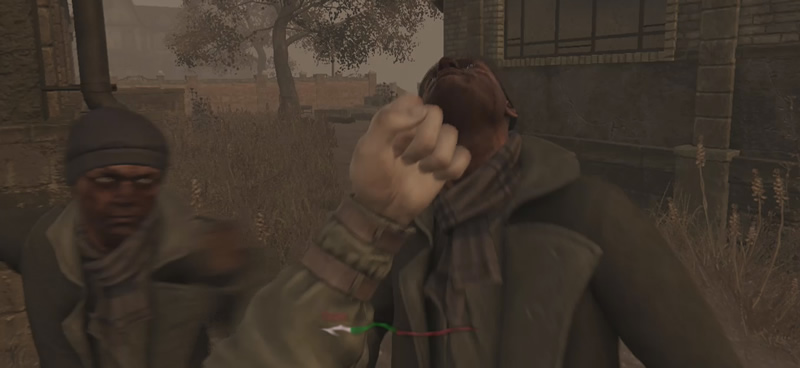
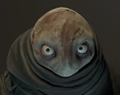

Combat
Welcome to our guide on combat!
Here I will explain how to fight enemies at close/long distances and stealthily too. In the end we check out some important mechanics and useful tips too!


- If you are having issues with Odongs, check out our guide about them here. (pending guide)
BEWARE: Never fight using your fists or even knives directly against enemies with blades. Despite the fact it is possible, the risk is too high to be worth it. One error is enough to everything go south. In my experience, if I have to fight an alerted and armed enemy, one precise shot in the head is the only option beside running away.